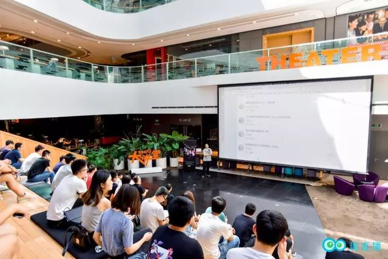

Partage d'expériences entrepreneuriales de Quzhibo | Original, traduit par l'IA

Il y a quelque temps, Quzhibo a organisé un échange sur la croissance des professionnels de la technologie. Le PDG de Quzhibo, Li Zhiwei, nous a partagé ses expériences en matière d’entrepreneuriat. Voici la vidéo :
Voici la version texte :
Comment avons-nous créé cette plateforme ?
Que souhaite accomplir Quzhibo ?
Aujourd’hui, je souhaite partager avec vous
l’histoire passée de Quzhibo.

Oui, les lancements de smartphones de Smartisan (marque également connue sous le nom de “Hammer” en anglais) sont souvent très impressionnants, avec des événements grandioses et bien organisés. Ces présentations sont généralement marquées par des discours passionnés de Luo Yonghao, le fondateur de Smartisan, qui met en avant les caractéristiques innovantes et le design unique des produits. Les lancements attirent beaucoup d’attention médiatique et de fans, créant une atmosphère de fête autour des nouveaux modèles.
À l’époque, jeune et inexpérimenté, j’ai décidé de créer moi-même une plateforme de streaming en direct, puis de la promouvoir sur mon cercle d’amis. C’était la première version de Quzhibo.
Lors du processus de publication, il y a eu un petit incident. À l’époque, notre slogan était “la première plateforme de diffusion en direct axée sur le savoir”. Beaucoup de gens, y compris le dieu des crevettes, l’ont mal interprété comme “la première plateforme de diffusion en direct axée sur le savoir sexuel”.
Je n’arrête pas de réfléchir, que devrais-je faire ?
Étant donné que je n’ai rien, qu’est-ce qui serait le plus facile à réussir ?

J’ai réfléchi longtemps, puisque je connais des personnalités comme Ye Gucheng et Tang Qiao, est-ce que je pourrais créer une plateforme de streaming en direct et les inviter à venir partager leurs connaissances ?
Créer d’abord une plateforme utilisée par des gens, c’était ma première idée.
Alors, j’ai décidé de créer une plateforme de streaming en direct. J’ai personnellement géré la compilation du code front-end et back-end ainsi que la mise en ligne du produit. J’ai acquis une grande partie de mes connaissances en développement front-end et back-end en collaborant avec Gucheng lors des revues de code, ce qui s’est avéré très utile pour ce projet.
Si vous excellez dans de nombreuses compétences, alors vous n’aurez aucune contrainte pour accomplir une tâche.

Lorsque la plateforme a été créée, il n’y avait ni popularité ni streamers. Comme beaucoup de programmeurs, je suis très indépendant dans mon travail et je résous les problèmes par moi-même. S’il n’y avait pas de streamers, alors je streamais moi-même.
Plus tard, j’ai fait la connaissance de Yilong, qui est devenu mon ancien collègue. Yilong est arrivé dans l’entreprise après moi, et j’avais souvent l’occasion de l’aider. Parfois, il me rendait aussi service, et petit à petit, nous sommes devenus de bons amis. Il m’arrivait aussi de profiter des repas organisés par Yilong. En fréquentant des amis talentueux et en participant à leurs repas, on a l’opportunité de rencontrer encore plus de personnes exceptionnelles.

Le temps de chacun est limité, alors il est préférable de passer le plus de temps possible avec des personnes exceptionnelles, car elles peuvent m’apporter une aide plus significative.
Par la suite, nous avons eu la chance d’inviter des experts renommés comme Xianhua et Gucheng à faire des lives sur notre plateforme, ce qui a progressivement accru la notoriété de celle-ci. Vous remarquerez que si vous vous spécialisez dans un domaine bien précis, il devient plus facile d’inviter des invités de marque, et vous pouvez attirer des experts de différents secteurs de la communauté technologique, tels que Chen Gang, Qin Chao, et Miaoshen.
En parcourant le chemin de l’entrepreneuriat, ce qui m’a le plus marqué, c’est de ne pas avoir été assez courageux dans mes actions.

Par exemple, Miao Shen et Qiao Ge, j’aurais pu les inviter dès après la diffusion en direct de Yilong, après tout, beaucoup de leurs amis ont déjà fait des lives sur notre plateforme. Mais j’ai toujours pensé que je n’avais jamais discuté avec eux, j’avais peur d’être rejeté ou simplement ignoré, et cette peur m’a empêché de les contacter activement. Au lieu de cela, j’ai choisi des streamers qui n’avaient pas autant d’influence qu’eux.
Plus tard, l’entreprise a connu une période de pertes. Lorsque je suis rentré chez moi pour célébrer le Nouvel An, les quelques centaines de yuans que j’avais sur moi m’avaient été donnés par mon père. Ma sœur m’a reproché en disant : “Tu es déjà si grand, tu devrais offrir des enveloppes rouges aux aînés et aux plus jeunes. Mais toi, tu es parti créer ton entreprise, sans un sou, tu ne peux même pas offrir d’enveloppes rouges.”
C’était la période la plus triste et la plus difficile pour moi. Les souffrances des hommes grandissent à cause de ce genre de choses.
De retour à Pékin, j’ai commencé à devenir plus courageux, à inviter plus activement divers influenceurs à faire des lives sur notre plateforme. Il faut savoir que les inviter à devenir animateurs ne signifie pas dire du mal d’eux, encore moins les critiquer, et de plus, ces influenceurs sont naturellement enclins à partager, donc il n’y a vraiment pas lieu d’avoir peur, il suffit d’être proactif et de communiquer avec eux.
Et c’est exactement ce qui s’est passé. Grâce à cette impulsion, nous avons successivement invité Qiao Ge, Miao Shen et Sunny à faire des lives sur notre plateforme, et celle-ci a réalisé des bénéfices dès le mois même.
Ce n’est que lorsque vous vous poussez vraiment au bord du gouffre que vous commencez à lutter contre vos faiblesses, ces faiblesses humaines en vous.

Plus tard, j’ai recommandé à M. Ye un responsable technique très compétent, qui l’a aidé à résoudre un problème majeur. Voyant que notre plateforme était rentable et que l’industrie du paiement pour les connaissances avait un bel avenir, M. Ye nous a accordé un investissement.
Vous devez donc d’abord faire vos preuves. Les gens n’investiront en vous que si vous avez de la valeur pour eux. Par exemple, si votre salaire annuel est de 2 millions, il sera relativement facile d’obtenir un financement de 2 millions. Après tout, vos compétences sont là, évidentes.
Après avoir obtenu le financement, la prochaine étape à suivre et la manière de bien gérer l’équipe sont les questions que je dois maintenant envisager et les défis auxquels je suis confronté.
Voilà l’histoire de Quzhibo, ainsi que mes réflexions sur l’entrepreneuriat.
Merci à tous !